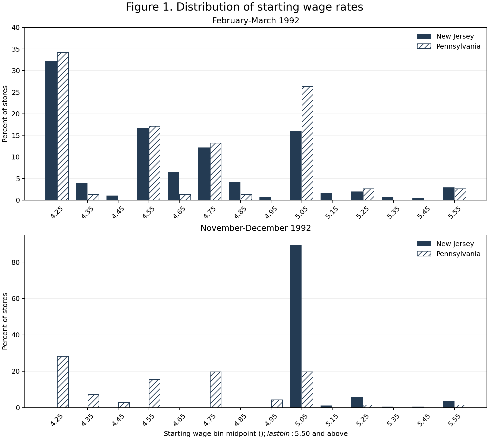

Tables 2-4 and Figure 1. Original input: 410 restaurants; regression sample: 357.
| section | variable | NJ | NJ_se | NJ_n | PA | PA_se | PA_n | t |
|---|---|---|---|---|---|---|---|---|
| 1 | Burger King | 41.0876 | 2.7083 | 331 | 44.3038 | 5.6245 | 79 | -0.5152 |
| 1 | KFC | 20.5438 | 2.2241 | 331 | 15.1899 | 4.0640 | 79 | 1.1557 |
| 1 | Roy Rogers | 24.7734 | 2.3764 | 331 | 21.5190 | 4.6531 | 79 | 0.6229 |
| 1 | Wendy's | 13.5952 | 1.8867 | 331 | 18.9873 | 4.4408 | 79 | -1.1176 |
| 1 | Company-owned | 34.1390 | 2.6103 | 331 | 35.4430 | 5.4161 | 79 | -0.2169 |
| 2 | FTE employment | 20.4394 | 0.5083 | 321 | 23.3312 | 1.3511 | 77 | -2.0032 |
| 2 | Percentage full-time employees | 32.8489 | 1.3256 | 321 | 35.0378 | 2.7274 | 77 | -0.7218 |
| 2 | Starting wage | 4.6121 | 0.0195 | 314 | 4.6301 | 0.0403 | 76 | -0.4015 |
| 2 | Wage = 4.25 (percentage) | 30.5136 | 2.5348 | 331 | 32.9114 | 5.3205 | 79 | -0.4069 |
| 2 | Price of full meal | 3.3511 | 0.0365 | 311 | 3.0424 | 0.0689 | 76 | 3.9558 |
| 2 | Hours open (weekday) | 14.4184 | 0.1528 | 331 | 14.5253 | 0.3321 | 79 | -0.2924 |
| 2 | Recruiting bonus | 23.5650 | 2.3363 | 331 | 29.1139 | 5.1438 | 79 | -0.9822 |
| 3 | FTE employment | 21.0274 | 0.5203 | 319 | 21.1656 | 0.9432 | 77 | -0.1283 |
| 3 | Percentage full-time employees | 35.8656 | 1.3800 | 314 | 30.3848 | 2.8061 | 76 | 1.7527 |
| 3 | Starting wage | 5.0808 | 0.0059 | 318 | 4.6175 | 0.0424 | 71 | 10.8197 |
| 3 | Wage = 4.25 (percentage) | 0.0000 | 0.0000 | 331 | 25.3165 | 4.9234 | 79 | -5.1420 |
| 3 | Wage = 5.05 (percentage) | 85.4985 | 1.9383 | 331 | 1.2658 | 1.2658 | 79 | 36.3848 |
| 3 | Price of full meal | 3.4148 | 0.0364 | 305 | 3.0266 | 0.0672 | 71 | 5.0784 |
| 3 | Hours open (weekday) | 14.4198 | 0.1519 | 321 | 14.6538 | 0.3270 | 78 | -0.6492 |
| 3 | Recruiting bonus | 20.3175 | 2.2707 | 315 | 23.3766 | 4.8547 | 77 | -0.5708 |
Section 1: store types; section 2: wave 1; section 3: wave 2. Percentages are in percentage points.
| group | row | PA | NJ | NJ-PA | low | mid | high | low-high | mid-high |
|---|---|---|---|---|---|---|---|---|---|
| 1 | 23.3312 | 20.4394 | -2.8918 | 19.5567 | 20.0807 | 22.2500 | -2.6933 | -2.1693 | |
| 2 | 21.1656 | 21.0274 | -0.1382 | 20.8776 | 20.9556 | 20.2138 | 0.6638 | 0.7418 | |
| 3 | -2.1656 | 0.5880 | 2.7536 | 1.3208 | 0.8749 | -2.0362 | 3.3571 | 2.9111 | |
| 4 | -2.2833 | 0.4667 | 2.7500 | 1.2048 | 0.7098 | -2.1567 | 3.3615 | 2.8666 | |
| 5 | -2.2833 | 0.2259 | 2.5092 | 0.8974 | 0.4940 | -2.3897 | 3.2871 | 2.8837 |
Rows: 1 before; 2 after; 3 separate-wave difference; 4 paired-store difference; 5 temporary closures set to zero. Low/mid/high: NJ baseline wage $4.25 / $4.26-$4.99 / at least $5.00.
| group | row | PA | NJ | NJ-PA | low | mid | high | low-high | mid-high |
|---|---|---|---|---|---|---|---|---|---|
| 1 | 1.3511 | 0.5083 | 1.4436 | 0.7749 | 0.8413 | 1.1358 | 1.3749 | 1.4134 | |
| 2 | 0.9432 | 0.5203 | 1.0772 | 1.0059 | 0.7556 | 1.0251 | 1.4362 | 1.2735 | |
| 3 | 1.2220 | 0.4721 | 1.3100 | 0.8116 | 0.6728 | 0.9819 | 1.2739 | 1.1903 | |
| 4 | 1.2533 | 0.4808 | 1.3423 | 0.8225 | 0.6862 | 1.0073 | 1.3005 | 1.2189 | |
| 5 | 1.2533 | 0.4910 | 1.3460 | 0.8699 | 0.6928 | 1.0194 | 1.3401 | 1.2325 |
| model | regressor | estimate | se | n | residual_se | controls_p | chain_controls | ownership_control | region_controls | ci95_lower | ci95_upper |
|---|---|---|---|---|---|---|---|---|---|---|---|
| 1 | STATE | 2.3258 | 1.1916 | 357 | 8.7909 | NaN | False | False | False | -0.0176 | 4.6693 |
| 2 | STATE | 2.3039 | 1.1955 | 357 | 8.7847 | 0.3443 | True | True | False | -0.0474 | 4.6552 |
| 3 | gap | 15.6529 | 6.0802 | 357 | 8.7565 | NaN | False | False | False | 3.6951 | 27.6107 |
| 4 | gap | 14.9157 | 6.2053 | 357 | 8.7592 | 0.4374 | True | True | False | 2.7114 | 27.1200 |
| 5 | gap | 11.9131 | 7.3944 | 357 | 8.7402 | 0.3075 | True | False | True | -2.6303 | 26.4564 |
Conventional OLS standard errors, as in the original table. Controls p: joint F test excluding all added controls. Model (v) follows the author's public SAS code and omits ownership, despite the published combined controls label.

Explicit ten-cent bins and top-coded tail; the original publication does not specify exact bin edges. The broad distribution is reproduced; pixel-level/bar-level identity is not claimed.
164 / 186 entries fall within the original displayed rounding interval. Differences outside that interval appear below; all comparisons are in comparison.csv.
| table | row | column | actual | original | difference | digits | matches_published_precision | note |
|---|---|---|---|---|---|---|---|---|
| Table 2 | 3. FTE employment | t | -0.1283 | -0.2000 | 0.0717 | 1 | False | |
| Table 2 | 3. Wage = 5.05 (percentage) | NJ | 85.4985 | 85.2000 | 0.2985 | 1 | False | |
| Table 2 | 3. Wage = 5.05 (percentage) | t | 36.3848 | 36.1000 | 0.2848 | 1 | False | |
| Table 2 | 3. Wage = 5.05 (percentage) | NJ_se | 1.9383 | 2.0000 | -0.0617 | 1 | False | |
| Table 2 | 3. Price of full meal | t | 5.0784 | 5.0000 | 0.0784 | 1 | False | |
| Table 2 | 3. Hours open (weekday) | t | -0.6492 | -0.8000 | 0.1508 | 1 | False | |
| Table 3 | 2 | NJ-PA_se | 1.0772 | 1.0700 | 0.0072 | 2 | False | |
| Table 3 | 2 | low-high | 0.6638 | 0.6700 | -0.0062 | 2 | False | |
| Table 3 | 2 | mid-high | 0.7418 | 0.7500 | -0.0082 | 2 | False | |
| Table 3 | 3 | PA | -2.1656 | -2.1600 | -0.0056 | 2 | False | |
| Table 3 | 3 | PA_se | 1.2220 | 1.2500 | -0.0280 | 2 | False | Unequal-sample store-cluster influence SE; original algorithm not reported. |
| Table 3 | 3 | NJ_se | 0.4721 | 0.5400 | -0.0679 | 2 | False | Unequal-sample store-cluster influence SE; original algorithm not reported. |
| Table 3 | 3 | NJ-PA | 2.7536 | 2.7600 | -0.0064 | 2 | False | |
| Table 3 | 3 | NJ-PA_se | 1.3100 | 1.3600 | -0.0500 | 2 | False | Unequal-sample store-cluster influence SE; original algorithm not reported. |
| Table 3 | 3 | low_se | 0.8116 | 0.9500 | -0.1384 | 2 | False | Unequal-sample store-cluster influence SE; original algorithm not reported. |
| Table 3 | 3 | mid_se | 0.6728 | 0.8400 | -0.1672 | 2 | False | Unequal-sample store-cluster influence SE; original algorithm not reported. |
| Table 3 | 3 | high_se | 0.9819 | 1.1400 | -0.1581 | 2 | False | Unequal-sample store-cluster influence SE; original algorithm not reported. |
| Table 3 | 3 | low-high_se | 1.2739 | 1.4800 | -0.2061 | 2 | False | Unequal-sample store-cluster influence SE; original algorithm not reported. |
| Table 3 | 3 | mid-high_se | 1.1903 | 1.4100 | -0.2197 | 2 | False | Unequal-sample store-cluster influence SE; original algorithm not reported. |
| Table 3 | 4 | low | 1.2048 | 1.2100 | -0.0052 | 2 | False | |
| Table 4 | 5 | residual_se | 8.7402 | 8.7500 | -0.0098 | 2 | False | |
| Table 4 | 5 | controls_p | 0.3075 | 0.4000 | -0.0925 | 2 | False |
| state | sample | n |
|---|---|---|
| PA | all | 79 |
| PA | wave1_fte | 77 |
| PA | wave2_fte | 77 |
| PA | balanced | 75 |
| PA | temporary_zero_balanced | 75 |
| PA | table4 | 67 |
| PA | permanent_closure | 1 |
| PA | temporary_closure | 0 |
| NJ | all | 331 |
| NJ | wave1_fte | 321 |
| NJ | wave2_fte | 319 |
| NJ | balanced | 309 |
| NJ | temporary_zero_balanced | 313 |
| NJ | table4 | 290 |
| NJ | permanent_closure | 5 |
| NJ | temporary_closure | 4 |
Source: Card and Krueger (1994), American Economic Review 84(4), pp. 772-793; course Package 01.